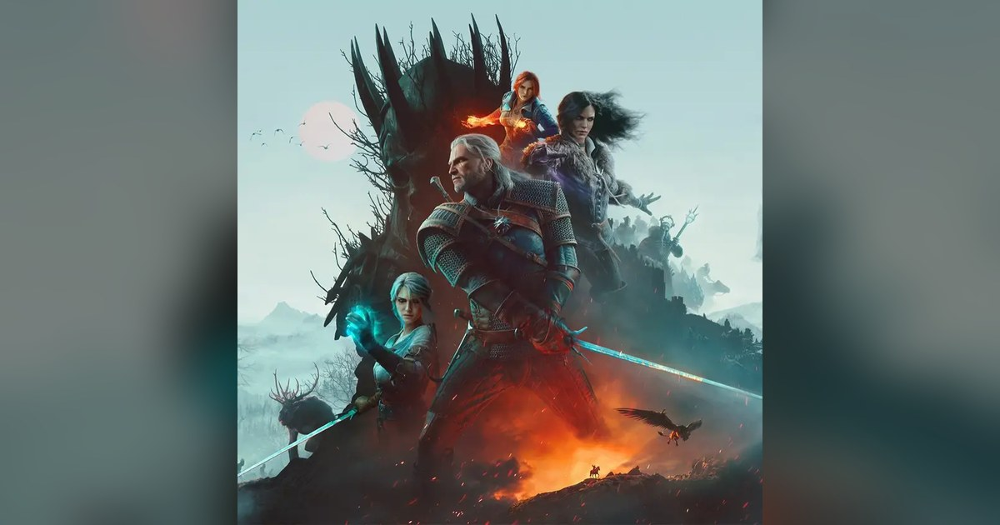

The Witcher 3 Remastered just got a wave of new console mods — including a fan-made expansion with a dozen quests
Patch 5.02 is live on PC, PlayStation 5, Xbox Series X|S, and Nintendo Switch 2, and its headline is the mod library: a big batch of new cross-platform mods, led by an expansion-sized quest pack.

CD Projekt Red is still feeding The Witcher 3. Patch 5.02 went live November 26 across PC, PlayStation 5, Xbox Series X|S, and Nintendo Switch 2 — and while the notes are full of fixes, the real story is the mod library: more than 40 new cross-platform mods are now live in the game, with CD Projekt Red promising more on the way. Console players, who had far fewer options than PC players when the Remastered version launched at the end of September, just got the gap closed in a big way.
The Remastered edition's in-game Mods menu — powered by mod.io, free for owners of the game — lets players browse and install community creations from the main menu after linking a CD Projekt Red account. Until now, the console catalog was thin. This patch changes that.
What's in the new mod wave
The headliner is "Tales of the Witcher: Cintra," an expansion-sized mod that adds a dozen quests to the game. Around it, the new batch covers the full spread of what console modding is for: "Glowing Witcher Eyes" gives Geralt a more lore-accurate, unsettling look; there are new hairstyles for Geralt, alternative looks for Ciri, extra monster hunts, and added narrative content — plus, for the truly committed, a boat race.
It's a meaningful moment for a game that is eleven years old and still being played like it's new. The Remastered version, which launched September 29, was the first time The Witcher 3 ever had official mods on consoles. Patch 5.02 is the first real proof that CD Projekt Red intends to keep growing that catalog rather than letting it sit.
The fixes underneath
The patch is also a heavy round of repair work. Installing or uninstalling mods no longer empties merchant inventories, Geralt's inventory, or his storage — a bug that could wipe hours of progress. Outdated PC mods now get disabled with a warning instead of crashing the game with a compilation error. Merchant interaction, broken for some players, is restored.
The visual fixes read like a blooper reel: Geralt could turn bald after enabling HairWorks, grow a beard that made his head invisible with the Rabble-rouser hairstyle, or end up missing faces and body parts. All fixed. Meditating for less than a minute could send time running backwards indefinitely; that's fixed too. Photo Mode gets a round of improvements, and the game now supports 32:9 super-ultrawide displays.
Why this one matters
The Witcher 3 is in a strange, strong position: a decade-old game with a remaster that keeps getting better, a mod scene that finally reaches consoles, and a future mapped out in public. Polygon reports the Songs of the Past expansion arrives next year — about the size of the 2016 expansion Blood and Wine, and a finale to Geralt's adventures — with The Witcher 4, starring Ciri, to follow in 2028. A fan-made quest pack landing on consoles today is a decent way to spend the wait.
Sources: The Witcher 3 Remastered's Mod Library Just Got a Massive Update (Polygon) · The Witcher 3 Wild Hunt Remastered Adds 40 Cross-Platform Mods in New Patch (GosuGamers) · Patch 5.02 for The Witcher 3: Wild Hunt — Remastered is live! (CD Projekt Red) · Witcher 3 Remastered Patch 5.02 Fixes Mod Installs That Emptied Geralt's Inventory (Tech Times)
Gear up: Razer — mice, keyboards, headsets and laptops.